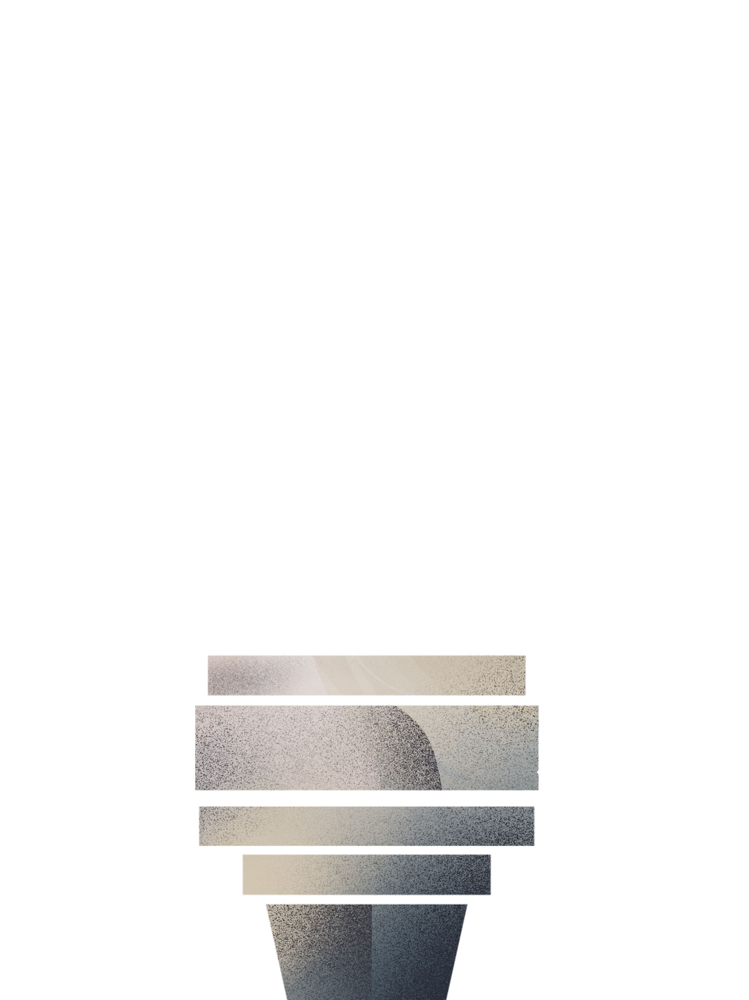

Liberty Enlightening the World
The ability to participate in political life and
exercise civil rights without restrictions.
Can you vote
freely?
Can you speak
without censorship?
Are your rights
protected by law?
+
+
+
+
+
+
=
Each country receives a score from 0 to 100.
The scores determine a classification:
FREE
PARTIALLY FREE
NOT FREE


This visualization draws on
Liberty Enlightening the World.
The Statue of Liberty's original name reflects the American perspective embedded in Freedom House's methodology.
Bright copper for
FREE
countries.
Oxidized green for
NOT FREE
countries.
Each torch represents a geopolitical region.
Each flame or column is a country.
Flame height shows the freedom score.
Color indicates the status.
Some countries changed status over the years.
A star symbol marks these shifts.
Click to explore the context behind the change.

One organization. One interpretation.
One of many ways of measuring freedom.